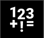
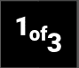
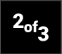
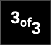
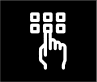
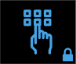
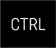

TODO: ADD LIST OF SECTION LINKS HERE!!!
Getting started - type your first word
Run OptiKey and it will be displayed with a dark theme, position itself somewhere in the top left corner of your screen, and hover above all other applications. By default it uses your mouse cursor position for input and and selecting a key is performed by hovering over a key for about 1.5 seconds. Try it out - move your mouse cursor over OptiKey and notice how the current key under your cursor is highlighted with a red outline. Keep the mouse cursor over a single key and you'll see an indication of your selection progress on the current key. This is a method of selection called "fixation" or "dwell" and requires you to keep your attention (the cursor) on each key for an amount of time in order to select the key. Complete a selection over a letter and it will be pressed and appear in the "scratchpad" at the top. You will also notice that some auto complete suggestions will appear above the scratchpad. Keep selecting letters to type a whole word, or select one of the auto complete suggestions to complete your word. If you make a mistake you can use the backspace key to delete your last selection or to delete the last whole word. That's all there is to start selecting keys and typing words...
Going beyond letters - numbers, symbols and diacritics
At some point you'll probably want to type a number, symbol, or diactrical letter (e.g. an accented e). For numbers and symbols you want the  key, which will take you to a different keyboard. There are too many symbols to fit on one screen, but you can toggle between the symbol keyboard screens by selecing the , , and  keys. At any time you can select the key to go back to the main (A-Z letters) keyboard.
If you want diacritical letters or currency symbols then select the key and then the diacritic key (#1 in the menu screenshot below) or currency key (#2 in the menu screenshot below). Again, there are more options than it is possible to fit on one screen, so use the "1 of X", "2 of X" keys to move between the screens. As before, the key on each of those keyboards takes you back to the letters keyboard.
Control OptiKey with your eyes:
As an alternative to selecting keys with your mouse cursor, OptiKey also supports selection using only your eyes (eye trackers currently supported: GazeTracker and TheEyeTribe). Connect your tracker and start the tracker's application(s) (e.g. for TheEyeTribe you would start the client and server applications). Complete any initial setup to get the tracker up and running; usually this involves getting yourself/your tracker/your screen in the correct position and competing a calibration. Once it's tracking your eyes reliably start OptiKey. Once OptiKey has started, open the Management Console (with OptiKey focussed press ALT + M) and select the "Pointing & Selecting" tab, then change the "Source" (under "Pointing") to your tracking device. Leave the "Key selection source" and "Point selection source" set to "Fixation" for now). Click "OK" to save your changes. OptiKey may need to restart, but your changes will be saved. When OptiKey starts up again it will be listening to your eye tracker so try looking around rather than using the mouse cursor to make key selections.
Changing how selections are made (fixations/key presses/mouse button clicks):
There are a few ways to make selections, such as selecting a key. We've already seen the fixation method, where you dwell over a key for a period of time until the selection is made, but you can also use a keyboard key or mouse button to indicate that you want to make a selection. To change the selection method open the Management Console (with OptiKey focussed press ALT + M) and select the "Pointing & Selecting" tab. Under "Selection" you'll see "Key selection source" and "Point selection source"; the former is the setting to change the way keys are selected, whilst the latter is the setting to change the way points are selected when simulating mouse control. When you change either method you will be shown other associated settings, for example if you select that you would like the "Key selection source" to be "Keyboard Key" then there will be a setting to change which key is used (and likewise for "Mouse button").
Try it out - change the "Key selection source" to "Keyboard key". By default it will expect the "Ins"/"Insert" key, so click "OK" to save your changes (and restart OptiKey), direct your attention to a key, and press the "Ins" key once to select that key.
Making OptiKey speak:
Type whatever you want spoken into the scratchpad and then select the key. The voice, rate of speech and volume are all changeable from the Management Console (with OptiKey focussed press ALT + M). Which voices you can choose depends on which voices are installed in your copy of Windows (please google for instructions on how to add new voices as the method varies for each version of Windows).
Simulate physical keyboard presses to type into other applications:
Typing words into the scratchpad is great if you only want OptiKey to speak, but you can also use OptiKey to simulate keystrokes on a physical keyboard and type into other applications. To get started clear the scratchpad using the key. Then select the  key turn keystroke simulation on (the key will stay locked down until you decide you want to release it by selecting it again). Now select another application where you would like to begin typing, e.g. type a letter into Microsoft Word, or an email into Gmail. For now use your physical mouse to select where you would like to start typing (I will show you how to control the mouse with OptiKey shortly). Start typing words - they will appear in both the scratchpad and your selected application and and can be used to correct any mistakes.
You may have also noticed that some new keys are available now that the  key is pressed, for example the , , , and keys. These work in exactly the same way as they do on a physical keyboard, and can be combined with other keys by holding them down - try selecting one of them and you'll notice that it cycles through 3 states; UP, DOWN, and LOCKED DOWN (e.g. ,  , ), before returning to UP. This makes it easy to press or lock down a number of keys together, for example select CTRL to press it down, and then press the "P" key to send the "Print" command to the active application. Check if any of these "modifier" keys are pressed if you experience unexpected behaviour while typing into another application, as it is easy to forget that the , , , or key(s) is(are) locked down and affecting what you are trying to type.
, ), before returning to UP. This makes it easy to press or lock down a number of keys together, for example select CTRL to press it down, and then press the "P" key to send the "Print" command to the active application. Check if any of these "modifier" keys are pressed if you experience unexpected behaviour while typing into another application, as it is easy to forget that the , , , or key(s) is(are) locked down and affecting what you are trying to type.
One last thing... with enabled there is a whole new keyboard available to you; 'Physical' (#3 in the menu keyboard screenshot below), which you'll find in the menu by selecting the key. This keyboard contains all the keyboard keys we've not covered yet, such as ESCAPE, INSERT, ARROW KEYS, FUNCTION KEYS, etc.
Simulate mouse control to click, drag and scroll:
OptiKey is able to simulate mouse input, meaning you can click, drag and scroll as if using a physical mouse. To open the mouse keyboard select the key and then the 'Mouse' key (#4 in the menu keyboard screenshot below).
The basic mouse actions (left, middle and right click, or scrolling - #1 to #4, and #7 to #14 in the mouse keyboard screenshot below) are performed by selecting the desired key and then directing your attention to the point where you wish to perform the click or scroll (a large cursor will be displayed to show where OptiKey will click/scroll, together with a progress indicator). If you turn on the option then selecting a point becomes a two step process;
- Direct your attention to roughly where you wish to click/scroll, at which point a magnified image of that area will be displayed.
- Direct your attention to exactly where you wish to click/scroll in the magnified image to perform the action at that point (or select outside the magnified area to cancel the action).
Drag (#5 in the mouse keyboard screenshot below) is slightly different as two selections have to be made after you select the drag key;
- Select point one (this will be a two step process if you have turned on) - this will be where the mouse button is pressed and held down.
- Select point two (again, a two step process if using the magnify feature) - this will be the point to which the mouse cursor is dragged and released.
The 'Repeat Last' key (#6 in the mouse keyboard screenshot below) allows you to repeat the last mouse action taken, which can be useful if you want to scroll down a long web page one scroll at a time, for example.
You'll also notice the modifier keys (#16 to #19 on the mouse keyboard screenshot below) - if you have locked down then this section shows you which of the modifier keys are held down and allows you to release them, as holding down any of the , , , or keys can change what happens when you attempt to take a mouse action, such as clicking.
Mouse actions not behaving as expected?